<div id="anime-wiki-container">

    <div class="anime-info">
        <div class="anime-wiki-banner">
            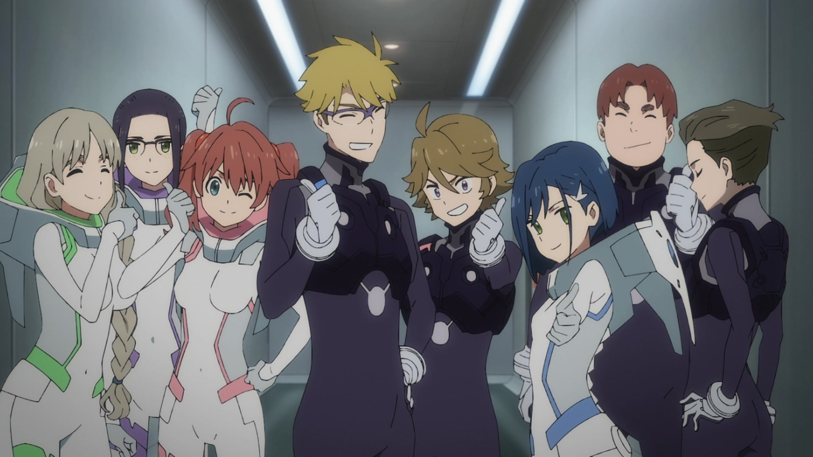
        </div>
        <div class="info">
            <br>
            <h1>Darling in the Franxx</h1><br>
            <h2>Description</h2>
            <div class="anime-wiki-paragraph">
                <p>
                    DARLING in the FRANXX (ダーリン・イン・ザ・フランキス, Darin in za Furankisu) is
                    a 2018 science fiction/mecha anime co-produced by Studio TRIGGER and A-1 Pictures.
                    The series was announced at Trigger's Anime Expo 2017 panel in July 2017.
                    In a post-apocalyptic future, young pilots fight against giant monsters known as
                    klaxosaurs using giant feminine robots known as FRANXX. Their identities are defined
                    solely by their role as pilots, with no personal freedom or knowledge of the outside
                    world beyond the "birdcage" of Mistilteinn or the mobile fortress of Plantation.
                    When former prodigy Hiro becomes unable to pilot a FRANXX, he becomes filled with
                    doubt and conflict about his own worth. That doubt and conflict changes to resolve
                    when he meets a strange part-klaxosaur girl with horns on her head called Zero Two.
                    Despite the risks of teaming up with a known "partner killer," Hiro becomes Zero
                    Two's DARLING to fly a FRANXX again.</p><br>
            </div>
            <br>
            <h2>Characters</h2><br>
            <div class="characters-container">
                <div class="char-icon">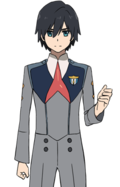
                </div>
                <div class="char-icon">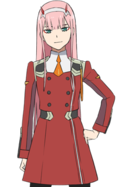</div>
                <div class="char-icon">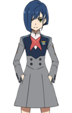
                </div>
                <div class="char-icon">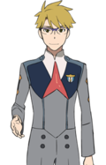
                </div>
                <div class="char-icon">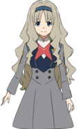
                </div>
                <div class="char-icon">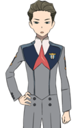
                </div>
                <div class="char-icon">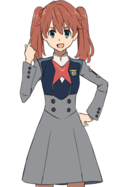
                </div>
                <div class="char-icon">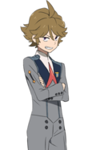
                </div>
                <div class="char-icon">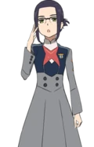
                </div>
                <div class="char-icon">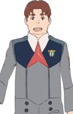
                </div>
            </div>

            <div class="characters-info">
                <div class="character">
                    <div class="char-full-body">
                        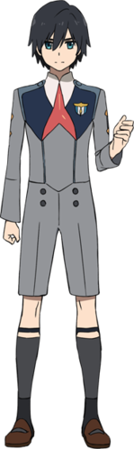
                    </div>
                    <div class="char-story">
                        <h2>Hiro</h2><br>
                        <p>Hiro (ヒロ, Hiro) had an average build, height, and a standard "slim"
                            male physique. He had black, shaggy hair and rich blue eyes.
                            His checkered past had left him with an emphatic expression on his face.
                            He was often seen in the standard Stamen Parasite uniform.</p><br>
                        <p>Over the time spent together he began to reproduce feelings of
                            romance with Zero Two, and when their relationship as partners
                            began to take a turn and slowly crumble, he reawakened his
                            previous feelings during childhood with her, along with his
                            current feelings of love.</p>
                        <p><br> The two eventually began a
                            relationship together before their demise. Although motivated
                            to fulfil his duty as a parasite, he later makes it his purpose
                            in life to free all the parasites from APE’s control and he
                            selflessly sacrifices his own life to protect his friends
                            and the planet.</p><br>
                        <p>A thousand years later, Hiro and Zero Two's souls reincarnate
                            as a pair of children that meet each other again and rekindle
                            their romance.</p>
                    </div>

                </div>
                <div class="character">
                    <div class="char-full-body">
                        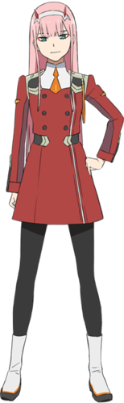
                    </div>
                    <div class="char-story">
                        <h2>Zero Two</h2><br>
                        <p>Zero Two (ゼロツー, Zero Tsū) was a human-klaxo sapiens hybrid and a
                            member of the APE Special Force fighting on the front lines. An elite
                            Parasite with the codename "002" who was also known as the
                            "Partner Killer", Zero Two had always accepted solitude due to her
                            horns and Klaxosaur blood. Despite having no regard for human life
                            or her own and being used to fight alone, she took an interest in
                            Hiro and decided to give him a chance to pilot with her, making him
                            her new partner and "darling". After Hiro was able to ride with her
                            more than three times, the pair became the 13th Plantation's newest m
                            embers, piloting a FRANXX called Strelizia.</p><br>
                        <p>Over the time spent together, Zero Two came to develop special
                            feelings towards Hiro, but her determination to become human
                            coupled with Hiro's apparent fear of her increasingly feral
                            characteristics made her begin seeing him as nothing more than
                            an outlet to become human. When their relationship as partners
                            began to take a turn and slowly crumble, she remembered her
                            forgotten feelings of love towards Hiro during childhood along
                            with her current feelings. The two eventually became a couple
                            and chose to sacrifice their own lives in order to protect t
                            hose dear to them.</p>
                    </div>

                </div>
                <div class="character">
                    <div class="char-full-body">
                        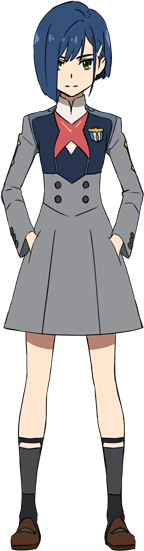
                    </div>
                    <div class="char-story">
                        <h2>Ichigo</h2><br>
                        <p>Ichigo (イチゴ, Ichigo) is a former Parasite with the
                            codename "015" of the Thirteenth Plantation, where she was
                            partnered in boy-girl pair with Goro to pilot a FRANXX called
                            Delphinium. She was the official leader of Squad 13.</p><br>

                        <p>Due to her feelings for Hiro, she struggles between her
                            selfishness and her responsibilities as a leader. Out if
                            the entire squad, she alienates Zero Two the most and almost
                            succeeds in separating her from Hiro for good until she
                            realizes Zero Two is the only one Hiro loves, which prompts
                            her to give up on him for the sake of his happiness and she
                            eventually finds a new love in Goro at the end of the series.
                        <p></p>
                    </div>

                </div>
                <div class="character">
                    <div class="char-full-body">
                        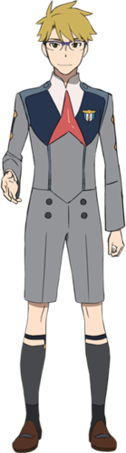
                    </div>
                    <div class="char-story">
                        <h2>Goro</h2><br>
                        <p>Goro (ゴロー, Gorō) is a former Parasite
                            with the codename "056" of Thirteenth Plantation,
                            where he was partnered in boy-girl pair with Ichigo
                            to pilot a FRANXX called Delphinium.</p>

                        <p>As an optimist, Goro prefers to be open-minded and
                            civil for the sake of avoiding conflicts, even
                            restraining his feelings for Ichigo because of her
                            feelings for Hiro, his best friend. Under duress, he will
                            take over the role as the leader to ensure the stability
                            and survival of the squad.</p>
                    </div>

                </div>
                <div class="character">
                    <div class="char-full-body">
                        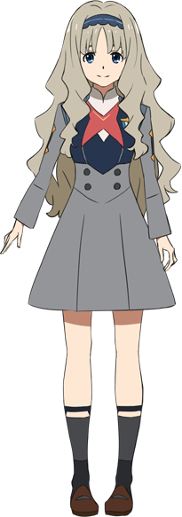
                    </div>
                    <div class="char-story">
                        <h2>Kokoro</h2><br>
                        <p>Kokoro (ココロ, Kokoro) is a former Parasite with
                            the codename "556" of the Thirteenth Plantation,
                            where she was partnered in boy-girl pair with Mitsuru
                            to pilot a FRANXX called Genista and she was previously
                            partnered with Futoshi.</p><br>
                        <p>Over time, she began an intimate relationship with Mitsuru
                            and they had a wedding ceremony but were punished by
                            having their memories altered. Despite this, they reconciled
                            after learning she was pregnant with his child and they
                            formally married. Together, they have four children; a girl
                            named Ai who resembles her, a boy who also takes more after h
                            er, another girl who resembles Mitsuru, and an unborn child.</p>
                    </div>

                </div>
                <div class="character">
                    <div class="char-full-body">
                        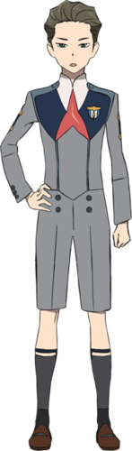
                    </div>
                    <div class="char-story">
                        <h2>Mitsuru</h2><br>
                        <p>Mitsuru (ミツル, Mitsuru) is a former Parasite with the
                            codename "326" of the Thirteenth Plantation, where he
                            was partnered in boy-girl pair with Kokoro to pilot a
                            FRANXX called Genista. Previously, he was the partner
                            of Ikuno and the pilot of Chlorophytum.</p>

                        <p>Overtime, Mitsuru underwent a significant change and
                            developed an intimate relationship with Kokoro. They
                            had a wedding ceremony but were punished by having their
                            memories altered. Despite this, upon learning she was
                            pregnant with his child, they reconciled and formally got
                            married. Together, they have four children: a girl named
                            Ai who resembles Kokoro, a boy who also takes after her,
                            another girl who resembles Mitsuru, and an unborn child.</p>
                    </div>

                </div>
                <div class="character">
                    <div class="char-full-body">
                        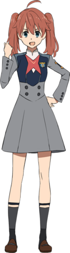
                    </div>
                    <div class="char-story">
                        <h2>Miku</h2><br>
                        <p>Miku (ミク, Miku) is a former Parasite with the codename "390"
                            of the Thirteenth Plantation, where she is partnered in
                            boy-girl pair with Zorome to pilot a FRANXX called Argentea.</p>

                        <p>She is the most assertive and head-strong of the girls and is
                            not afraid to clash with the boys. She is motivated to strive
                            and she shares an attitude almost identical to Zorome’s, which
                            makes them perfectly compatible.</p>
                    </div>

                </div>
                <div class="character">
                    <div class="char-full-body">
                        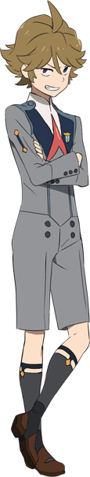
                    </div>
                    <div class="char-story">
                        <h2>Zorome</h2><br>
                        <p>Zorome (ゾロメ, Zorome) is a former Parasite with the codename "666"
                            of the Thirteenth Plantation, where he is partnered in boy-girl
                            pair with Miku to pilot a FRANXX called Argentea.</p>

                        <p>Aside from being the most immature member of the squad, he is the
                            most loyal to the adults and APE, and his long-reaching goal is
                            to become an adult himself. He presents himself as somewhat of a
                            bully and pervert but he is also a dedicated member of the squad
                            and willing to do whatever it takes to help his squadmates.</p>
                    </div>

                </div>
                <div class="character">
                    <div class="char-full-body">
                        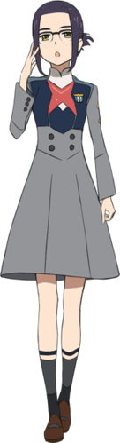
                    </div>
                    <div class="char-story">
                        <h2>Ikuno</h2><br>
                        <p>Ikuno (イクノ, Ikuno) is a former Parasite with the codename
                            "196" of the Thirteenth Plantation, where she's partnered
                            in boy-girl pair with Futoshi to pilot a FRANXX called
                            Chlorophytum. She had Mitsuru as her original partner.</p>

                        <p>As she struggled with her sexuality, she shared a stormy
                            partnership with Mitsuru and didn’t know how to express her
                            true feelings for Ichigo. She usually kept her thoughts to
                            herself until Ichigo encouraged her to be more
                            open about herself.</p>
                    </div>

                </div>
                <div class="character">
                    <div class="char-full-body">
                        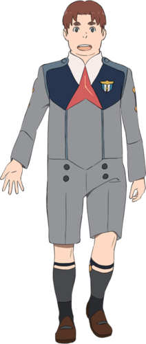
                    </div>
                    <div class="char-story">
                        <h2>Futoshi</h2><br>
                        <p>Futoshi (フトシ, Futoshi) is a former Parasite with the
                            codename "214" of the Thirteenth Plantation, where he
                            was partnered in a boy-girl pair with Ikuno to pilot a
                            FRANXX called Chlorophytum. He was previously partnered
                            with Kokoro and the pilot of Genista.</p>

                        <p>Aside from his love for food, Futoshi is motivated to do
                            his best through his feelings for Kokoro, whom he is
                            determined to protect. However, after she reveals she
                            doesn’t reciprocate his feelings, he continues to work
                            hard for the sake of his friends.</p>
                    </div>

                </div>
            </div>
        </div>
    </div>
</div>